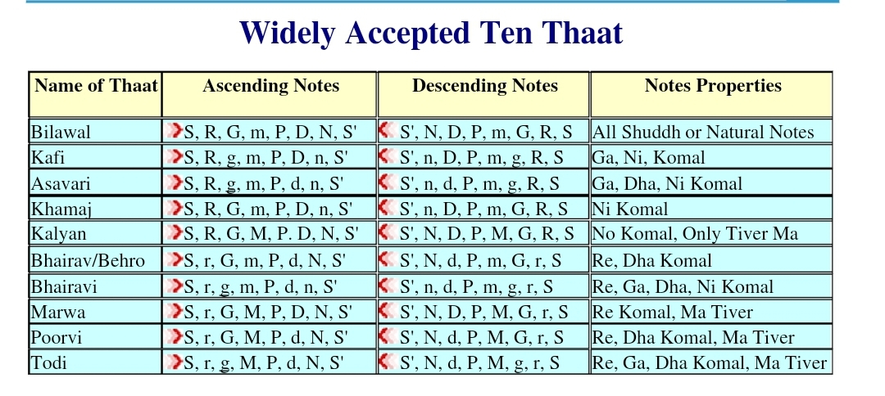
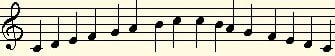
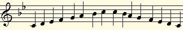
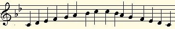
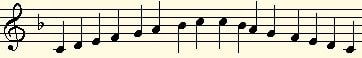
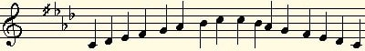

10 Thaats in Indian Classical Music
The set of seven notes is called a thaat and thaat produce ragas. The system of classification for the ragain different groups is called a thaat. Thaat system is an "artificial" way to classifying ragas.Classification in Thaat system is purely for academic purpose. It is not necessary that Ragas from thesame thaat might have same or similar personality. The idea behind thaat is pretty simple. There are 12notes in an octave - 7 pure notes and 5 flat/augmented notes. If one makes various permutations of thesenotes, one can think of 72 different combinations. Hindustani system, however, adds further restrictionson the way these notes are used. It is usually not allowed to use both pure and corresponding flat noteone after the other (and since this is an evolved art form and not science, there are always exceptions tosuch rules). When such restrictions are factored in, the numbers of thaat reduce to ten. It is important forbeginners to practice Kalyan thaat well to begin with. As they get comfortable with it, they may switchto Behravi thaat. I also find from my own experience that Bhairav thaat too presents some interestingfingering challenges. If one gets command on these three, the other thaat usually follow pretty easily.
So, there are twelve notes in an octave. But for creating music, you usually choose specific notes from within those twelve notes to give yourself a theme. Since melody is so central to Indian music, we are always on the lookout for note combinations (scales) that offer significant melodic potential. These are called ragas, and we know of about 500 ragas in the Indian classical tradition.


The Bilawal scale (all natural)

The Kafi scale (flat 3rd & 7th)

The Bhairav scale (flat 2nd & 6th)

The Khamaj scale (flat 7th)

The Bhairav scale (flat 2nd & 6th)
Ragas are classified in various ways. One system is to classify them under ten parent scales, known as "thaat." These are similar to modes in ancient Greek music. Unlike ragas, which are more flexible in the number of notes they can include, parent scales are always heptatonic and must include one each of the seven swar - sa, re, ga, ma, pa, dha and ni. Variations arise due to the different forms (natural, flat, or sharp) of the variable notes used. The video below demonstrates the ten parent scales. Once again, C is the tonic (sa) and I have color-coded the natural notes red, the flat notes pink, and the sharp note maroon. For the sake of efficiency, the video has been set at a brisk pace, but feel free to adjust its speed by clicking the settings button.
Let us meet agin in another lesson, Till then Happy Fluting!!